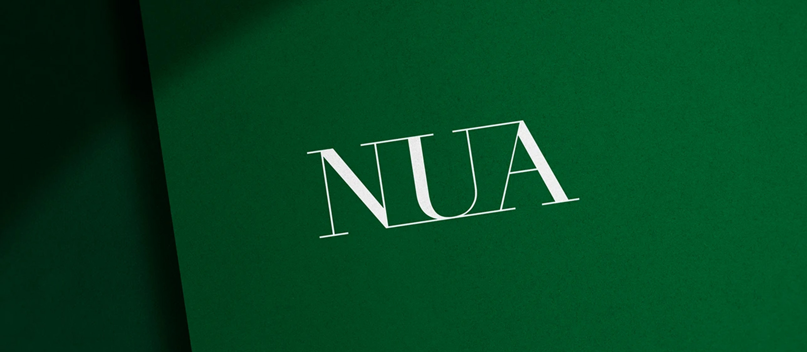
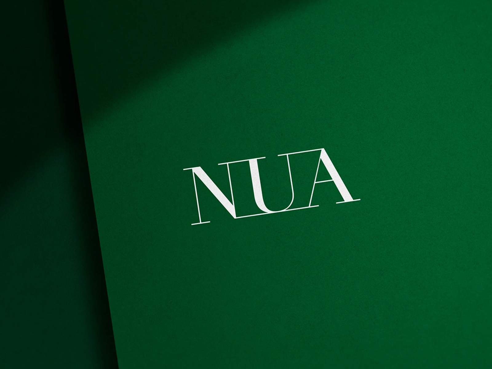
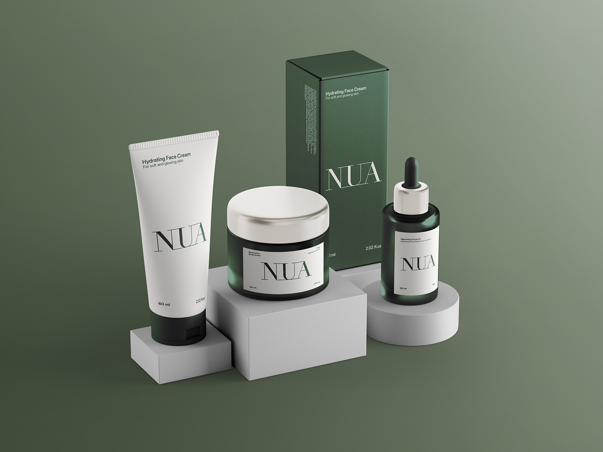
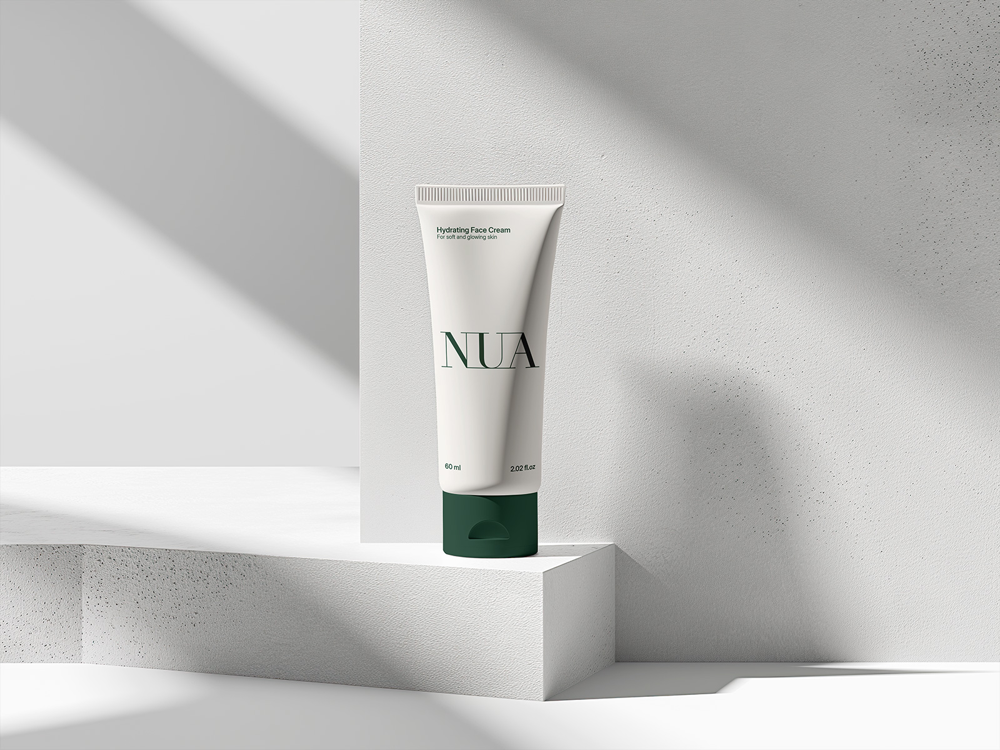
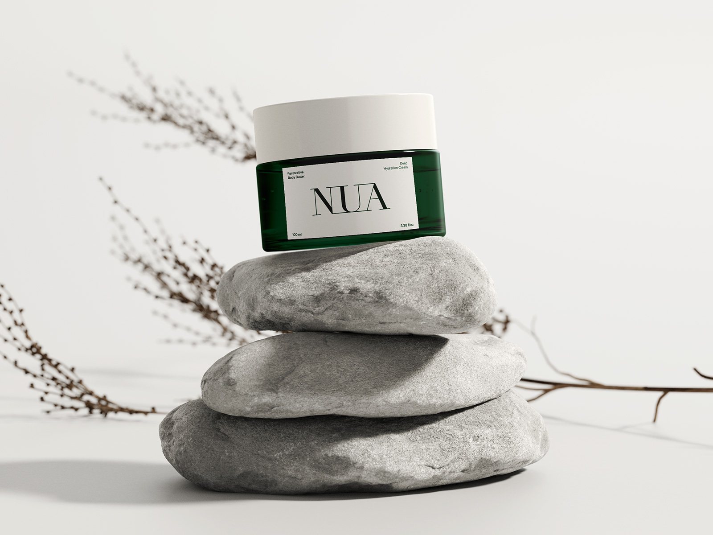

Proyectos / NUA
NUA fue un proyecto en el que tuve que crear toda la identidad visual desde cero para una marca ficticia de cosméticos que busca transmitir pureza y naturalidad. Para darle un nombre que encajara con esa idea, me basé en la palabra celta “nua”, que significa “desnudo” o “puro”.

El gran reto era reflejar esos valores sin caer en clichés y, al mismo tiempo, dar un toque de lujo y sofisticación. Por eso diseñé un logotipo con serifas que le da ese aire elegante y clásico, pero sin perder frescura.
El packaging es muy minimalista y práctico: el logo en el centro y la información del producto organizada en las esquinas de la etiqueta para que sea fácil de leer. Además, aposté por materiales sostenibles como vidrio reciclado y cartón ecológico para reforzar el compromiso con el medio ambiente.
Al final, conseguí una identidad clara, elegante y responsable, que funciona muy bien para posicionar a NUA como una marca premium que no renuncia a sus valores.



